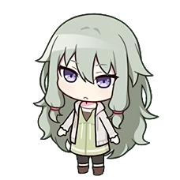

| Kagamine Len |
| Geschlecht |
Männlich |
| Geburtstag |
December 27 |
| Höhe |
156 cm |
| |
|
| |
|
Virtual Singer und Freund.
| Tenma Tsukasa |
| Geschlecht |
Männlich |
| Geburtstag |
Mai 17 |
| Höhe |
172 cm |
| Hobbies |
Musicals,
Kostüme herstellen
|
| Spezialität |
Auffallend coole Posen,
Klavier
|
| |
| Lieblingsessen |
Acqua pazza,
Mit Ingwer gebratenes Schweinefleisch
|
| Am wenigsten gemochtes Essen |
Paprikas |
| Mag nicht |
Insekten (insbesondere Tausendfüßler) |
Gruppenmitglied und Freund. Nach ihrem ersten Auftritt, der aufgrund eines Versehens
scheiterte, kritisierte Rui Tsukasa scharf dafür, dass er Nene die Schuld gegeben hatte,
und folgerte, dass er ein oberflächlicher Narzisst sei, der Shows als Mittel ansehe,
Aufmerksamkeit von Menschen zu erregen. Tsukasa entschuldigt sich jedoch und teilt Rui
in einer Show seine wahren Gefühle mit, und sie kommen wieder zusammen. Rui sieht ihn jetzt
als einen Schauspieler, der einer Bühne würdig ist, und ist zuversichtlich, ihm sehr
anstrengende (und manchmal gefährliche) Regieanweisungen zu geben, wohlwissend, dass er
die Rolle mit Stolz übernehmen wird. Tsukasa findet ihn großartig, aber verrückt. Die
beiden sind in der Schule als „Weirdo Wombo Combo“ bekannt, die täglich für Aufruhr
und Ärger auf dem Campus sorgen.
| Otori Emu |
| Geschlecht |
Weiblich |
| Geburtstag |
September 9 |
| Höhe |
152 cm |
| Hobbies |
Erkundung der Nachbarschaft |
| Spezialität |
Akrobatik,
Feinschmeckerin
|
| |
| Lieblingsessen |
Taiyaki |
| Am wenigsten gemochtes Essen |
Nichts! |
| Mag nicht |
Dämmerung |
Gruppenmitglied und Freundin. Rui findet sie wunderbar bizarr und Emu findet ihn
sehr cool, da er von Ruis hellen und auffälligen Ideen ziemlich beeindruckt und
fasziniert ist. Die beiden ermutigen sich gegenseitig sehr und Rui unterstützt Emus
Ziel, der Wonder Stage wieder zu ihrem früheren Glanz zu verhelfen. Als Rui sich für
Emu gegen ihre älteren Brüder einsetzt, verhält er sich zunächst passiv, verliert aber
bald die Fassung, als sie weiterhin ihre jüngere Schwester und ihre Träume herabwürdigen
und sie schnell zum Schweigen bringen.

| Kusanagi Nene |
| Geschlecht |
Weiblich |
| Geburtstag |
Juli 20 |
| Höhe |
156 cm |
| Hobbies |
Kmapfspiele,
Musicals,
Filme
|
| Spezialität |
Singen,
Technologie
|
| |
| Lieblingsessen |
Grapefruit |
| Am wenigsten gemochtes Essen |
Lebensmittel mit Minzgeschmack |
| Mag nicht |
Orte voller Menschen |
Gruppenmitglied und Freundin. Die beiden sind Nachbarn und Freunde aus Kindertagen,
und obwohl Nene ihn für einen Spinner hält, zeigt sie sich ihm gegenüber immer noch sehr
fürsorglich und macht sich gelegentlich Sorgen um seine geistige Gesundheit. Als sie
jung waren, hatte Nene Schwierigkeiten, mit Menschen zu reden. Um dem entgegenzuwirken,
schuf Rui Robo-Nene als Avatar, über den Nene sprechen konnte, was in gewissem Maße
hilfreich war. Sie wurden beide inspiriert, mit dem Theater zu beginnen, nachdem sie
dasselbe Stück gesehen hatten. Rui war auch derjenige, der sie einlud, der Truppe
beizutreten, da er von ihrem Talent und Hobby für das Singen wusste. Sie stimmt zu,
entscheidet sich jedoch aufgrund ihrer Angst dafür, durch Robo-Nene aufzutreten. In der
Hauptgeschichte freut sich Rui, dass Nene den Mut gefunden hat, wieder alleine auf der Bühne
zu stehen.
| Shinonome Akito |
| Geschlecht |
Männlich |
| Geburtstag |
November 12 |
| Höhe |
174 cm |
| Hobbies |
Mode-Styling |
| Spezialität |
Beatboxen |
| |
| Lieblingsessen |
Pfannkuchen,
Käsekuchen
|
| Am wenigsten gemochtes Essen |
Karotten |
| Mag nicht |
Hunde |
Schulkamerad und Bekannter. Trotz ihrer Unterschiede haben Rui und Akito das
gemeinsame Interesse, erfolgreiche Shows zu kreieren. Die beiden trafen sich zum
ersten Mal während der Veranstaltung „An Ode for the Pure of Heart“. Akito ist nicht
besonders angetan von Ruis Art, umgekehrte Psychologie einzusetzen, versteht aber,
dass Rui auf jeden Fall eine erfolgreiche Show auf die Beine stellen will. Obwohl
Akito dazu neigt, ihm aus dem Weg zu gehen, hat er auch Manieren und rennt nicht weg,
wenn er zufällig Augenkontakt mit Rui hat. Bei der Veranstaltung At This Festival
Coloured by Twilight interagieren die beiden erneut, als Rui verletzt wird.
Widerwillig hilft Akito Rui zum Sanitätszelt und lässt ihn behandeln. Rui ist dafür
äußerst dankbar und bedankt sich wiederholt bei Akito, bis sich ihre Wege trennen. Rui
scheint froh zu sein, dass Akito sich um seine Gesundheit kümmert, und schätzt Akitos
harte Arbeit und seinen Einsatz, als Vivid BAD SQUAD beim
Shibuya-Festival auftritt.
| Aoyagi Toya |
| Geschlecht |
Männlich |
| Geburtstag |
Mai 25 |
| Höhe |
178 cm |
| Hobbies |
Lesen |
| Spezialität |
Klavier |
| |
| Lieblingsessen |
Kaffee,
Kekse
|
| Am wenigsten gemochtes Essen |
Tintenfisch |
| Mag nicht |
Höhen |
Schulkamerad und Bekannter. Die beiden trafen sich zum ersten Mal während der
Veranstaltung An Ode for the Pure of Heart. Obwohl Toya aufgrund
früherer Gerüchte von Rui gehört hatte, lernte er Rui zu respektieren, als sie
gemeinsam an der Hochzeitsshow arbeiteten. In Rui's Never Give Up Cooking!
Karte, wollte Rui nicht sagen, dass Toyas Cupcakes schlecht aussahen und schmeckten,
weil er nicht wollte, dass Toya das Gefühl hatte aufzugeben. Dann ermutigte er Toya,
es weiter zu versuchen.
| Asahina Mafuyu |
| Geschlecht |
Weiblich |
| Geburtstag |
Januar 27 |
| Höhe |
162 cm |
| Hobbies |
Aquarium |
| Spezialität |
Englisch sprechen |
| |
| Lieblingsessen |
Mamas Hausmannskost |
| Am wenigsten gemochtes Essen |
Nicht sicher |
| Mag nicht |
Nicht sicher |
Rui scheint Mafuyu durch Mizuki zu kennen, obwohl sie sich zum ersten Mal
während der Veranstaltung At This Festival Coloured by Twilight trafen. Dank
der Informationen von Mizuki konnte er Mafuyus wahre Persönlichkeit erkennen.
Später gibt er Mafuyu Ratschläge und sagt, dass sie den Wünschen ihrer Mutter
nicht zu sehr folgen sollte und dass sie ihre Mutter damit konfrontieren muss,
was Mafuyu wirklich will.
| Akiyama Mizuki |
| Geschlecht |
Unbekannt |
| Geburtstag |
August 27 |
| Höhe |
163 cm |
| Hobbies |
Videos erstellen,
Collagen
|
| Spezialität |
Kleidung neu gestalten |
| |
| Lieblingsessen |
Curry rice,
French fries
|
| Am wenigsten gemochtes Essen |
Pilze |
| Mag nicht |
Zu heiße Speisen |
Freunde seit der Mittelschule. Sie freundeten sich darüber an, Ausgestoßene zu
sein, zusammen auf dem Dach herumzuhängen und größtenteils den Unterricht zu
schwänzen. Beim KAMIYAMA HIGH FESTIVAL! Event scheint Rui froh zu
sein, dass Mizuki Freunde gefunden hat. Mizuki war diejenige, der die Bühnenoutfits
von Rui und Nene kreierte, nachdem sie Rui bei der Arbeit an Robo-Nene trafen und
es völlig unsüß fanden.